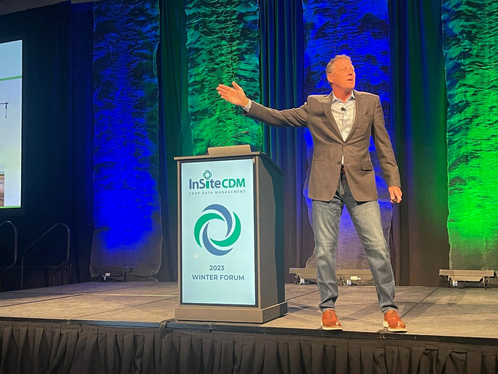

Keynote Speaker • Media Guest • Podcaster • Author
Straight-Forward Agriculture Dialogue
A Powerhouse in the Agriculture industry, Damian Mason travels the globe to speak about the industry he loves.

- 01 2,400+ Audiences addressed
- 02 50 States
- 03 1994 Speaking since
- 04 40,000+ Monthly listeners
Not Your Boring Ag Speaker, Damian is:
Connecting people of the world’s most important industry.
- Thought Provoking
- Engaging
- Enthusiastic
- Hilarious
Damian Mason has an exceptional understanding of the Agriculture industry, he’s been involved in it his entire life. That, combined with his passion to stay one step ahead of what’s looming for the industry, he works tirelessly to stay up to date with current trends, research current events and news, and connect with industry leaders. He provides immediate take-aways, future outlooks, and insights, to his audiences, but most importantly, Damian has an uncanny ability to stir up feelings of dignity and pride for people working in the most important industry in the world.
You don’t need anyone telling you the weather forecast or the commodity prices, technology does that for you!
What you need is a connection with real-world agriculture people and topics that inform, educate, and help you grow.
Explore KeynotesSome of Damian’s Clients:
Merck · Land O’Lakes · Cargill


More ReviewsMan, that guy makes you think! I loved it!
Amy B., AgroLiquid
If it’s Agriculture, it Needs Damian.